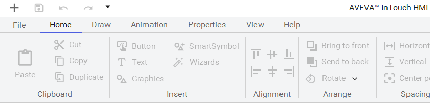
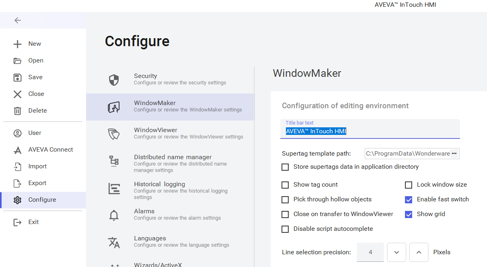
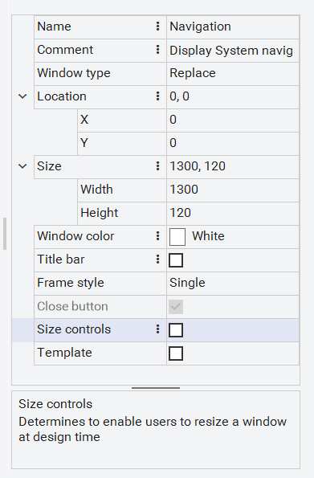

The WindowMaker development environment in its default layout (page 55)
Source: AVEVA InTouch for System Platform 2023 Training Manual, Module 2, Section 3 (pages 55–60)
This lesson provides an overview of the WindowMaker development environment, its ribbon interface, configuration options, and InTouch window types.
Reference: Module 2, Section 3 (pages 55–56)
WindowMaker is the InTouch development environment where you design and build HMI display windows. Its user interface adheres to Windows standards, featuring right-click mouse support, floating and docking toolbars, pull-down menus, and context-sensitive help. A customizable color palette provides support for up to 16.7 million colors, limited only by your video display hardware.
When WindowMaker is initially opened, most UI elements are automatically displayed in their default configuration. The interface is organized into several key views:
| View | Purpose |
|---|---|
| Windows | Lists user-created Native and Frame windows, organized into Base, Template, and Backup folders |
| Supertags | Template maker for constructing Supertags — a hierarchical tag structure |
| Tools | Quick access to major WindowMaker utilities |
| Scripts | Access to global script type editors (Application, Key, Condition, Data change, etc.) |
| Canvas | The central design workspace where you visually create and arrange windows |
| Industrial Graphics | Shows items from the Graphics tab in the IDE — your library of reusable symbols |
| Properties | Lists editable properties for the selected element or Frame window |
Reference: Module 2, Section 3 (pages 56)
The WindowMaker ribbons contain all design features for creating InTouch applications. They include both legacy features (for supporting older InTouch applications) and modern features (for Managed InTouch applications). The ribbons are organized by the tasks and workflows that an application designer would use.
| Tab | Key Functions |
|---|---|
| File (Backstage) | New, Open, Save, Close, Delete, User, AVEVA Connect, Import, Export, Configure, Exit — for window management and configuration |
| Home | Clipboard (copy/paste), Insert (buttons, symbols, graphics), Alignment, Arrange, Spacing, Graphic, Alarms, Tags |
| Draw (Legacy) | Drawing tools for lines, shapes, fonts, SmartSymbols, and legacy trend objects |
| Animation | Legacy animation tools for linking visual elements to tag values, plus tag/string substitution |
| Properties | Hierarchical symbol/instance selection from Application Server's model, plus legacy Symbol Factory |
| View | Show/hide WindowMaker views, access AVEVA Connect, set Dark mode Theme |
| Help | Web-based help for System Platform products, viewable in your default browser |

Reference: Module 2, Section 3 (pages 57)
Access the configuration screen by selecting File > Configure > WindowMaker from the backstage menu. This screen lets you set preferences that affect how WindowMaker behaves during development. Notable options include:

Reference: Module 2, Section 3 (pages 57–58)
An InTouch application is comprised of windows that contain graphics, text, animations, and scripts. When creating a new window (using the + button in the upper-left corner), you define its properties including name and window type. WindowMaker supports four window types:
| Window Type | Behavior |
|---|---|
| Replace | Automatically closes any windows it intersects when it appears on screen, including popup and replace type windows. |
| Overlay | Appears on top of currently displayed windows and can be larger than the windows it overlays. Clicking on any visible portion of a window behind an overlay makes that window active. |
| Popup | Similar to overlay, but always stays on top of all other open windows even when another window is clicked. |
| Frame | Used to host a single graphic. Frame windows enable panning and zooming at runtime. |

Reference: Module 2, Section 3 (pages 59)
Template windows are reusable application windows that serve as a starting point for creating new windows. They allow designers to create reusable standards. Windows marked as templates are listed separately under the Templates Windows folder. Modifying the original template window does not affect windows that were previously built from it.
To create a copy of an existing window, open the window and select File > Save Window As from the menu, then give the new window a different name.
Reference: Module 2, Section 3 (pages 59)
To add a button to a window, select the Button tool from the Draw ribbon. After clicking the tool, move your cursor over the canvas — the cursor changes to a cross hair (+). Click and drag to draw the button at the desired size, then release the mouse button.
To change the button's label text, right-click the button and select Substitute > Substitute Strings. To add animation (such as linking the button to a script or navigation action), double-click the button to open the animation editor.
1. What is the difference between a Replace window and a Popup window?
A Replace window automatically closes any windows it intersects when it appears. A Popup window appears on top of all other windows and stays on top even when another window is clicked — it never gets sent to the background.
2. What is the purpose of the "Lock window size" configuration option?
It prevents windows from changing their scale when the application is viewed at a different resolution than it was designed for, protecting against graphic distortion.
3. What are the limitations of Frame windows compared to other window types?
Frame windows can only host a single graphic and do not support multiple graphics, native InTouch controls, ActiveX controls, SmartSymbols, undo/redo, flip/rotate, print, cut/copy/paste, or cross-reference support.
4. How do you change the text label on a legacy InTouch button?
Right-click the button and select Substitute > Substitute Strings to change the button's label text.
Module 2 — Getting Started. AVEVA InTouch for System Platform 2023 Training.